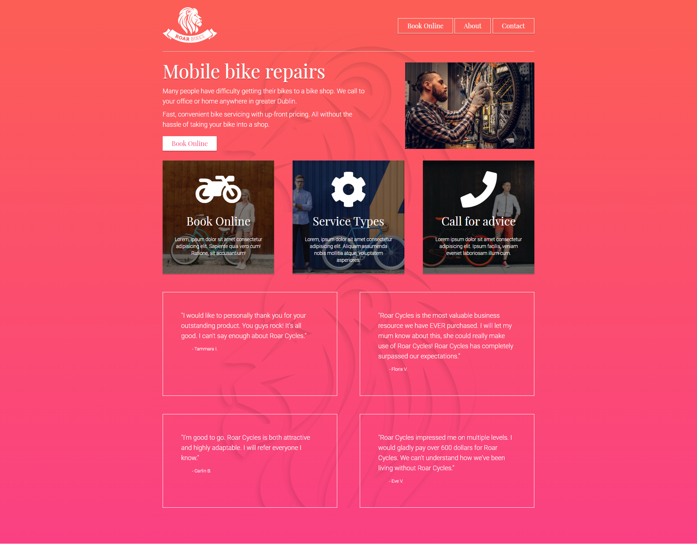

Here you may find a collection of some of Chesscraft's finished projects up on display with a paragraph or two about these projects and why they are important to Chesscraft. The projects will be split between the main skills required to finish each project. Be sure to check out the "Works in Progress" page and the "Future Projects" page.
Media Projects
Here is a small compilation of the best finished and uploaded videos of Chesscraft from Youtube. Note that these will focus on individual videos as opposed to the series from which it was taken, as most series will still be ongoing. However, there will still be information on the series and related content.
Starcraft 2 Breakdown: Marines
This video was made as part of a series to demonstrate and analyse the core mechanics, principles and ideas behind the key units that make up the RTS esport: Starcraft 2. At the same time, it was an opportunity for Chesscraft to demonstrate his understanding of overlays, components, images and more via his use of shotcut.
Starcraft II Breakdown is a series of videos Chesscraft is making. You can find more information about it in the "Work In Progress" page. Currently, there is only one video in this series - but he hopes to make more soon.
Chesscraft has multiple Videos surrounding Starcraft II, most of which are slightly less educational and more for the purpose of entertainment such as: Commentary on his own games, specific clips demonstrating high/interesting levels of play and control e.t.c.
IMMORTAL: Gates of Pyre
IMMORTAL: Gates of Pyre is an up and coming new RTS Game. Chesscraft is a huge fan of this RTS, and wholeheartedly supports the game. As such, he is currently a Harbinger (a recognized figure of the community) and is currently playtesting the game with other Harbingers and Early Access users. However, as such - as of right now (20/01/2021) we cannot make videos on actual gameplay apart from what already exists on their official Youtube.
As such, since Chesscraft loves the game so much and wants to make videos - he currently makes more presentational and educational videos on IMMORTAL. Using powerpoint, he educates viewers on what the game is about and why it is so great.
In the future, when this game becomes released to the public, Chesscraft plans to make more videos regarding tutorials, micro tips and tricks and gameplay videos. He would like to share his knowledge with the world and show people the wonders and beauty of IMMORTAL.
Celeste Playthrough
The Celeste - Let's Play series is a collection of videos showcasing raw - mostly unedited gameplay footage. This content is rather different from the SC2 and IMMORTAL videos mentioned before in that the footage was mostly recorded in twitch, and has more of an emphasis on viewer interaction (from the twitch chat) and gameplay.
The reason I chose to showcase this video as opposed to any of my other videos from different series is due to the fact that it is the latest series I am doing of a let's play, displays my use of the platform Twitch and is of a decent length.
Furthermore, this is still an ongoing series as Chesscraft is still processing videos and on top of this, there will be even more future projects surrounding this as he finishes the playthrough videos and begins work on highlights of each chapter.
List of other Completed Projects
Micro Mania Clips - Short clips on examples of cool looking or beautiful micro in action in starcraft 2.
Warcraft 1 Playthrough - Series on the playthrough of the old but classic: Warcraft: Orcs and Humans.
Little War Game Videos - Vids of Chesscraft trying out a browser based Real Time Strategy Game.
SC2 Commentary - Videos of either Chesscraft or other casters commentating on his Starcraft II games.
Creative Design Projects
Due to the nature of most of Chesscraft's work - most of his art and creative work are one off pieces and not parts of a bigger project, and hence will not be mentioned too much on this page especially since most of the graphics he has are all on the Creative Design page.
I will however, briefly mention the VROID avatars Chesscraft designed for his Youtube and Twitch Channel and the one he designed for the UCLA anime society. Yuni Chan was specifically designed to match the anime soc's pre-existing mascot.
Currently, the only art that 'serves a purpose' right now are the youtube thumbnails that Chesscraft uses for his Youtube videos and the VTube avatars. However, he hopes to change this in the future.
Technology Projects
Chesscraft has build quite a few websites before this website. However, as of now - this is the latest most invested project that Chesscraft has invested in and stands as one of the best websites Chesscraft has so far created. This will of course change in the future. Most of the websites chesscraft has build have come from Dan Scott's Byol web design course, however - he has givent each of them their own twist. After completing each website set by the course, Chesscraft will create an alternative similar website using the same or similar tehcnologies and skills learned.
Single Page: Basic Website
This website was the first official project we learned to make in the series of tutorials made by Dan Scott on his website: Bring Your Own Laptop. In this first project, we learned how to create a very basic webpage where content is simply stacked on top of each other with a nice background and some nice embedded content.
Fig 1.1 Bring Your Own Laptop Project 1
The first project was relatively simple to complete and was a lot of fun. A short, sweet project to get students motivated to learn and achieve more. The project laid down a lot of foundational information and basics required to delve deeper into the world of web development / web design. Ideas such as wireframes, the basics of nesting and different tags were all explored.
Fig 1.2 Self-designated project 1
Using the knowledge gained from Project 1 of Dan's course, Chesscraft decided to test himself and try to reinforce his memory and knowledge on basic web design/ web development and did so by making a very simple website similar to that of Dan's. We have a background in the back, a logo, menu and a header as well as some content. Instead of a map we have an embedded youtube video and finally we end with the Copyright in the footer.
Double Page: Flexbox website
The next project from Dan's tutorials covers the basics of how to create a website with components stacked neatly next to each other. This is achieved via a property called flex. Using flexbox, we can space out items neatly within a row. This course had a lot more information such as the uses of certain html5 tags, how to create basic dropdown menus and separate pages etc.

Figure 2.1A: BYOL Project 2 Index Page
Figure 2.1B: BYOL Project 2 Contact Page
On top of the styling, the use of svg images and the use or borders. We were also taught how to create a basic contact form which would be able to send data directly to an email address.
Single Page: Responsive Design
The third project was a relatively short one when compared to the others (excluding project 1). This is because it focussed more on the theory and ideas behind picture quality, pixel density and repsonsive design. However, that is not to say that there was not a lot to be learned! On the contrary, although the site seems simplistic, the code behind it goes into further detail on specifics such as how to appear at certain device widths and heights. Note that the picture you see below is a picture and not the actual website, hence it is not responsive.
Figure 3.1: BYOL Project 3
Multiple Pages: Bootstrap
Chesscraft was still in the progress of finishing this course when he decided to instead diverge from the course to do a bit of self study and self-designated projects. As a result, he created a website which contains elements and knowledge learned from all three of the previous websites and some of the knowledge from the bootstrap course which he has yet to complete. That website is: the one you are reading right now. It can also be seen embedded in the technology page.
Writing Projects
Aside from the two articles on RTS Games posted in the writing page, Chesscraft currently does not have any completed written pieces of work that he is comfortable enough to share as something he is proud of. However, hopefully this will change as he works on his novels and articles more in the future.